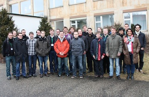

ZEUS Workshop 2012
Fourth Central European Workshop on Services and their Composition
February 23-24, 2012, Bamberg, Germany
Program
Thursday, February 23, 2012
- 10:00 Welcome from the Vice President Research, University of Bamberg
- 10:15 Welcome from the Program Chair, ZEUS 2012
- 10:30 Prof. Dr. Tim Weitzel. Is there a Business Value of SOA? (Keynote)
- 11:15 Christian Gierds. Toward Deciding the Existence of Adaptable Services
- 11:45 Jan Sürmeli. Cost-minimal Adapters for Services
- 12:15 Christoph Wagner. Partner Synthesis for Data-Dependent Services
- 13:45 Dariusz Doliwa, Wojciech Horzelski, Mariusz Jarocki, Artur Niewiadomski, Wojciech Penczek, Agata Polrola, and Jaroslaw Skaruz. HarmonICS - a Tool for Composing Medical Services
- 14:15 Daniel Stöhr and Sabine Glesner. Automated Composition of Timed Services by Planning as Model Checking
- 14:45 Diego Calvanese and Ario Santoso. Best Service Synthesis in the Weighted Roman Model
- 15:15 Mario Cortes Cornax, Sophie Dupuy-Chessa and Dominique Rieu. Choreographies in BPMN 2.0: New Challenges and Open Questions
- 15:45 Jörg Lenhard and Guido Wirtz. Building Orchestrations in B2Bi - The Case of BPEL 2.0 and BPMN 2.0
- 16:15 Kristian Duske and Richard Müller. A Survey on Approaches for Timed Services
- 19:30 Dinner
Friday, February 24, 2012
- 08:30 Andreas Meyer, Artem Polyvyanyy, and Mathias Weske. Weak Conformance of Process Models with respect to Data Objects
- 09:00 Sebastian Wagner, Oliver Kopp, and Frank Leymann. Towards Verification of Process Merge Patterns with Allen's Interval Algebra
- 09:30 Rami-Habib Eid-Sabbagh. Towards Automatic Generation of Process Architectures for Process Collections
- 10:30 Johannes Kretzschmar and Clemens Beckstein. Contextsensitive Online Adaption of Workflows
- 11:00 Nico Herzberg, Matthias Kunze, and Andreas Rogge-Solti. Towards process evaluation in non-automated process execution environments
- 11:30 Daniel Schulte. Towards a Human Task Management Reference Model
- 13:00 Uwe Breitenbücher, Oliver Kopp, Frank Leymann, Michael Reiter, Dieter Roller, and Tobias Unger. Building High Performance SOA Applications
- 13:30 Thomas Heinze, Wolfram Amme, Simon Moser, and Kai Gebhardt. Guided Control Flow Unfolding for Workflow Graphs Using Value Range Information
- 14:00 Andreas Lehmann and Niels Lohmann. Model support for confidential service-oriented business processes
- 14:45 Closing Session and Best Presentation Award
- 16:00 Bamberg Brewery Walk

Workshop
Local Organizers
Proceedings